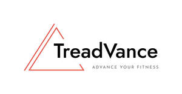

Trade Mark Journal No.2025/020 16 May 2025
UK00004197229 30 April 2025 (28)

- Class 28
- Exercise treadmills; Treadmills for use in physical exercise; Fitness exercise machines; Exercise steppers; Exercise weights; Stationary exercise bicycles; Bicycles (Stationary exercise -); Exercise bicycles (Stationary -); Exercise pulleys; Elliptical trainers; Exercise bikes; Fitness steppers; Rollers for stationary exercise bicycles; Exercise bicycles (Rollers for stationary -); Weight lifting machines for exercise; Wrist weights for exercise; Stands for jogging machines; Exercise trampolines; Machines incorporating weights for use in physical exercise; Aerobic step machines; Leg weights for exercising; Exercise benches; Ankle and wrist weights for exercise; Wrist and ankle weights for exercise; Storage racks for exercise weights; Cycling machines [stationary]; Indoor fitness apparatus; Rowing machines for fitness purposes; Stationary exercise bicycles and rollers therefor; Gym balls for yoga; Water rowing machines for fitness purposes; Exercise bars; Running machines; Aerobic steps; Exercise balls; Chest exercisers; Exercise platforms; Toy exercise apparatus; Body training apparatus [exercise]; Abdominal wheel rollers for fitness purposes; Manual leg exercisers; Leg weights for sports training; Physical exercises (Machines for -); Machines for physical exercises; Gym balls; Exercise hand grippers; Body-building apparatus [exercise]; Spring bars for exercise; Waist trimmer exercise belts; Hoops for exercise; Manually operated exercise equipment; Hoops for exercise incorporating measuring sensors; Dumbbells; Rowing machines; Dumbbells for weight lifting; Squat machines; Leg weights for athletic use; Adhesive abdominal exercise belts, electric, for muscle stimulation; Yoga wheels; Dumb-bells [for weight lifting]; Kettlebells; Dumbbell racks; Sports games; Sports equipment; Gloves for sports; Men's athletic supporters [sports articles]; Pads for use in sports; Springboards for sports; Rings for sports; Tennis uprights [sports equipment]; Sports equipment for pets; Sport hoops; Electronic targets for games and sports; Go games; Starting blocks [for track sports]; Push up stands; Ball pitching machines; Spinning discs incorporating string which rewinds and returns the disc to the hand when thrown; Exercise bands; Stress relief exercise balls; Body toner apparatus [exercise]; Stress relief balls for hand exercise; Weight vests for physical training purposes; Spring bars for exercising; Manually operated rings for lower and upper body resistance exercise; Strength training apparatus; Gym chalk for improving hand grip in sports activities; Sports training apparatus; Apparatus for achieving physical fitness [for non-medical use]; Inversion tables for fitness purposes; Martial arts training equipment; Home video game machines; Softball home plates; Play houses; Racing car games.
CHIDIEBERE GODSWILL ONYENANU